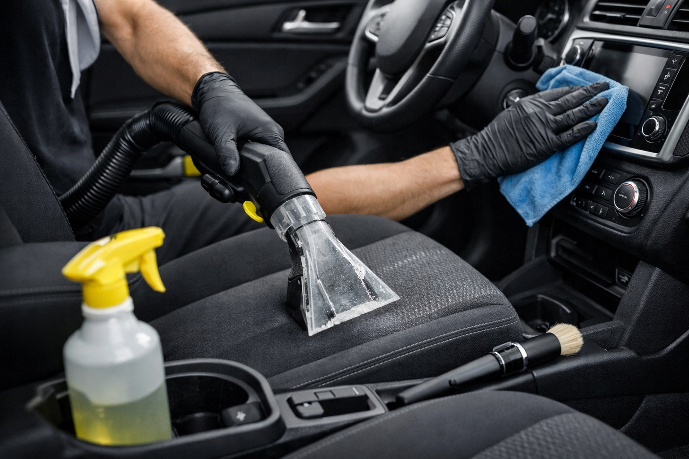

Lavagem detalhada
Limpeza completa com atenção a rodas, cantos, emblemas e acabamento.

Detalhamento, proteção e acabamento para quem leva cuidado automotivo a sério.
EXPLORAR SERVIÇOS ↘Cada serviço é pensado para recuperar acabamento, proteger superfícies e elevar a apresentação do veículo.
Limpeza completa com atenção a rodas, cantos, emblemas e acabamento.
Correção de pequenas imperfeições e recuperação do brilho da pintura.
Limpeza profunda de bancos, carpetes, painéis e superfícies internas.
Camada de proteção para preservar brilho e facilitar manutenção.
Entendemos o estado atual e o objetivo do cliente.
Limpeza, mascaramento e preparação das superfícies.
Aplicação técnica do serviço contratado.
Revisão final e orientação de cuidados posteriores.